CS184/284A Spring 2025 Homework 2 Write-Up
Link to webpage: cal-cs184-student.github.io/hw-webpages-ilovethomas/hw2/
Link to GitHub repository: github.com/cal-cs184-student/sp25-hw2-ilovethomas-2
Overview
This project implements mesh rendering and different methods of altering meshes. In this project, we are able to draw Bezier curves and extend the process into Bezier meshes. We are able to smooth shade these meshes and edit the vertices by flipping edges and splitting edges. These operations allow us to upsample the mesh for more granular control of the mesh shape.Section I: Bezier Curves and Surfaces
Part 1: Bezier curves with 1D de Casteljau subdivision
De Casteljau's algorithm is implemented by taking a weighted linear interpolation (lerp) based on some parameter \(t\). Given \(n\) control points \(P^0_i\) in a Bezier curve, we can find \(n-1\) intermediate points \(P^1_i\) by applying the following formula: \[P^1_i(t)=(1-t)P^0_i+tP^0_{i+1}\] Thus, if we had a curve with 6 control points, by applying de Casteljau's algorithm once, we get 5 sub-control points as such:|
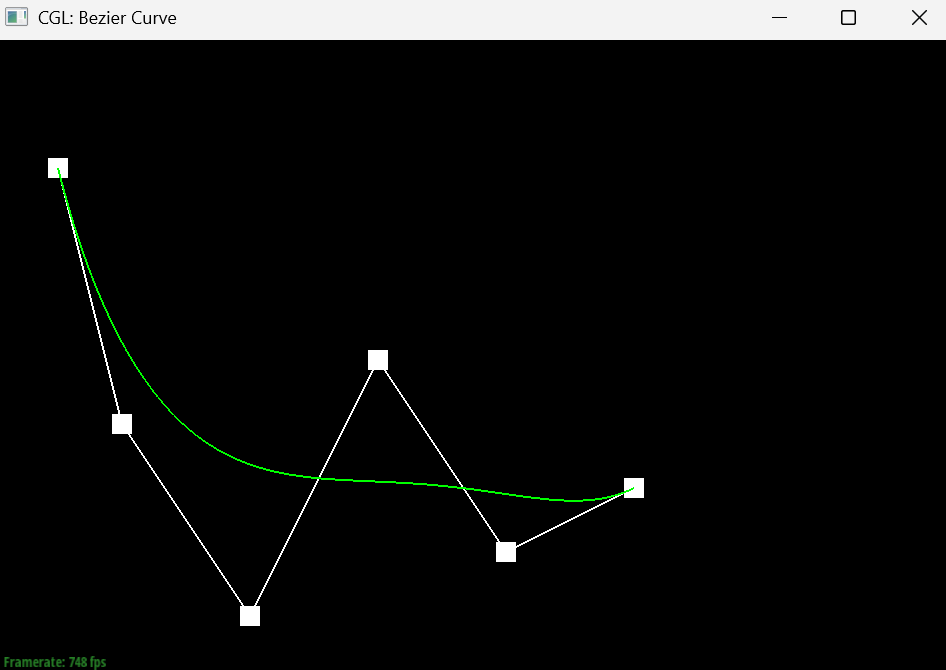
|
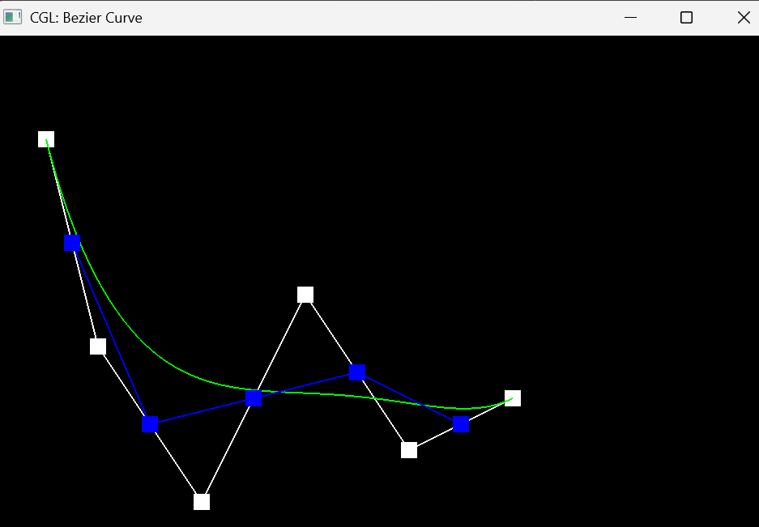
|

|
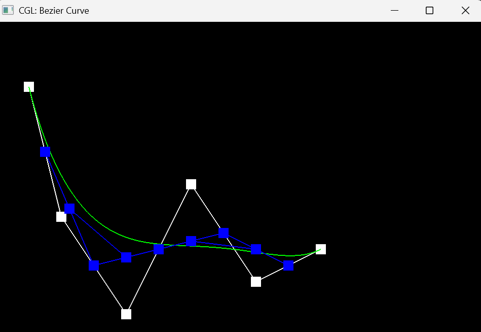
|
|
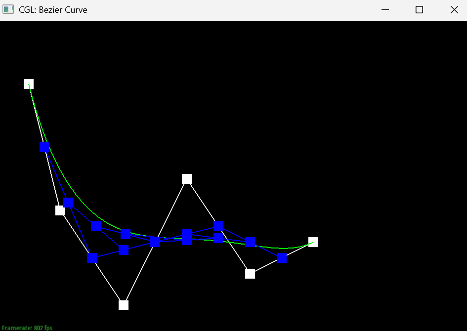
|
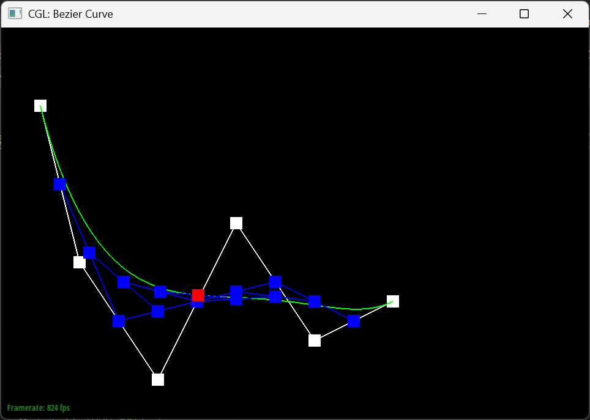
|
Part 2: Bezier surfaces with separable 1D de Casteljau
A Bezier surface is an extension of the Bezier curve. Given the \(u\times v\) 2D vector of control points, we can use de Casteljau's algorithm to simplify the control points in the v axis down to a single point. This leaves a vector of control points along the u axis, which we can then reapply de Casteljau's algorithm to reduce all the points down to a single drawing point. We can then vary the u and v parameters from 0 to 1 to get the smooth 3D surface as seen below:Section II: Triangle Meshes and Half-Edge Data Structure
Part 3: Area-weighted vertex normals
To get the area-weighted vertex normals, we first need to find the three vertices that make up the triangle face. We can do so by callingthis->halfedge()->next()->vertex() and this->halfedge()->next()->next()->vertex(). We then determine the subtending vectors by subtracting the positions of the other vertices from the position of the vertex object. We can then calculate the cross product between these vectors to find the orthoganal vector. To deterine the area of the triangle, We can simply divided the cross product(which also represents the area of the parallelogram formed by the two vectors) by 2. Finally, we make the vector a unit vector by calling the unit() funtion and return that vector.
|
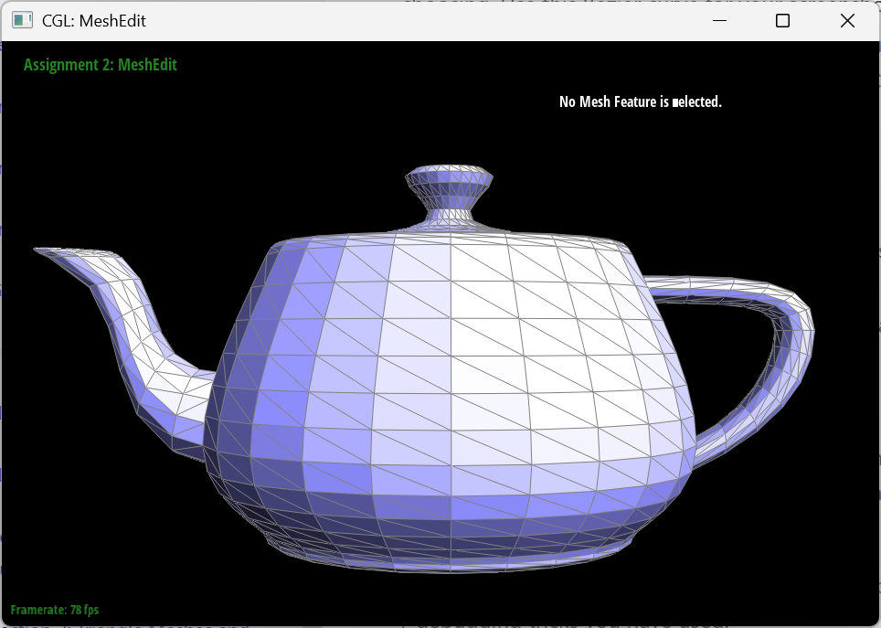
|
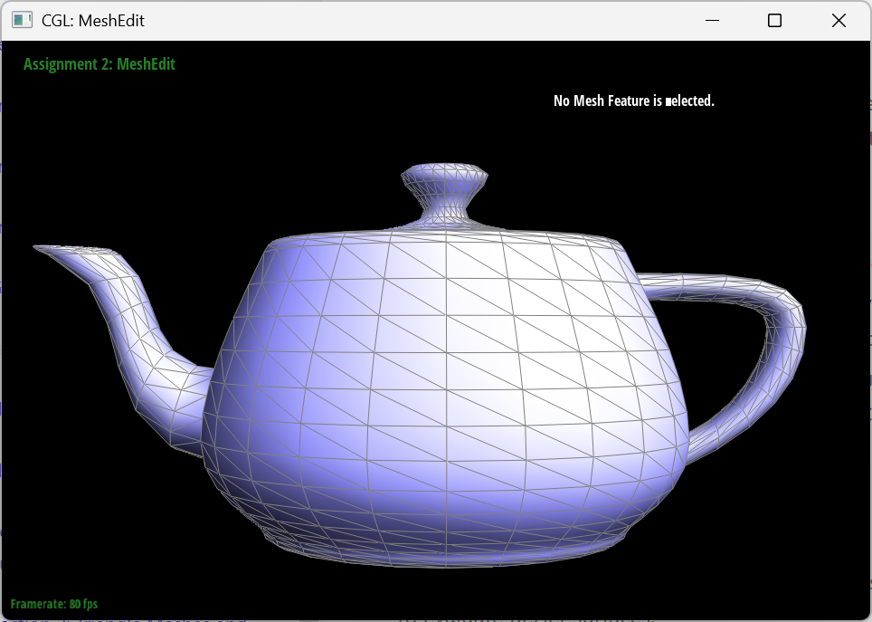
|
Part 4: Edge flip
In order to flip the edge, we got both the halfedge and its twin and iterated through all the vertices to to get the geometry of the two trangles. We then change the vertices of the desired edge to change to the opposite orientation. In our case, we labeled the original vertices v0 and v1 and changed the edge to point to v2 and v3. Then, in order to make sure the triangles update to the correct geometry, we reassign each halfedge to point at the correct face, update the next pointers to point to the right direction for both the halfedge and the twin, and update the face pointers to point to the correct new faces. Once we have ensured the correct geometry has been maintained, we can return the edge, which now points to the correct geometry.|
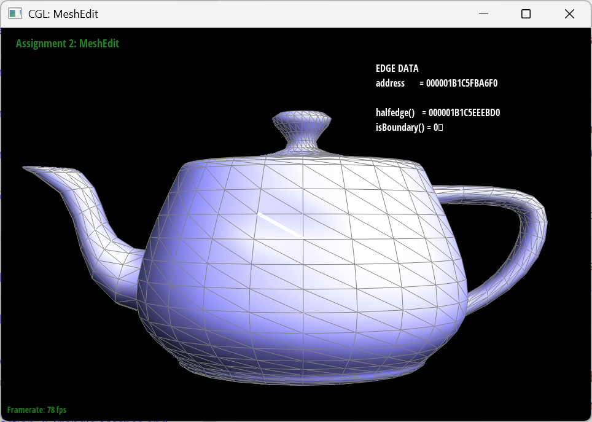
|
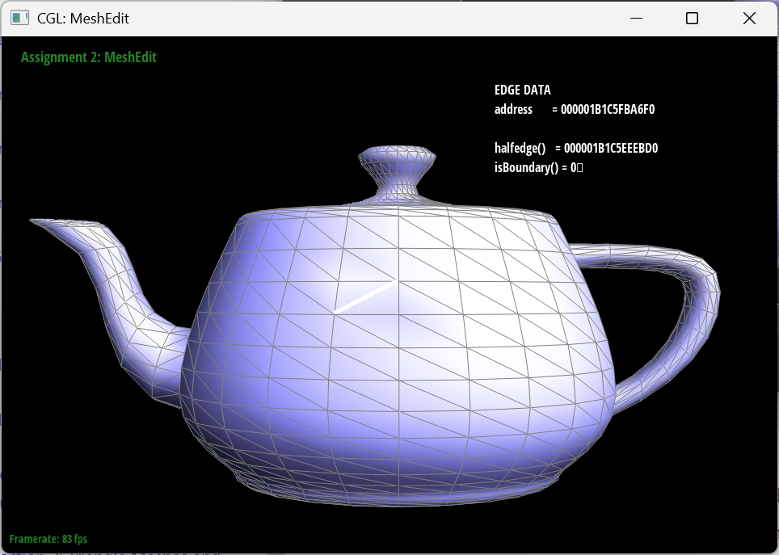
|
Part 5: Edge split
How it was implemented
The implementation of edge split was done by first getting the halfedges of the edge that was being split, and their corresponding faces and edges. If any of the faces were boundary faces, it would immediately return the bottom original vertex.
Once that check was done, we set iterators to the rest of the half edges and vertices in the mesh, and create 3 new edges, 6 new halfedges, 2 new faces and a vertex for the split. The position of the vertex is set to be the mid point between the 2 vertices of the edge being split.
Now that there are iterators for all the half edges, edges, faces and vertices corresponding to the new mesh after the split, we used setNeighbors on all the half edges to reassign its next halfedge, twin, vertex, edge and face corresponding to the new mesh. For the faces, edges, and vertices we also reassigned their corresponding halfedge to the appropriate halfedge. To make this easier, I had a drawing of the mesh after it was split and the names of all the iterators corresponding to each half edge, vertex and face. I would just look at the half edge I was setting and see what the values were based on the drawing.Teapot mesh before and after edge splits
|
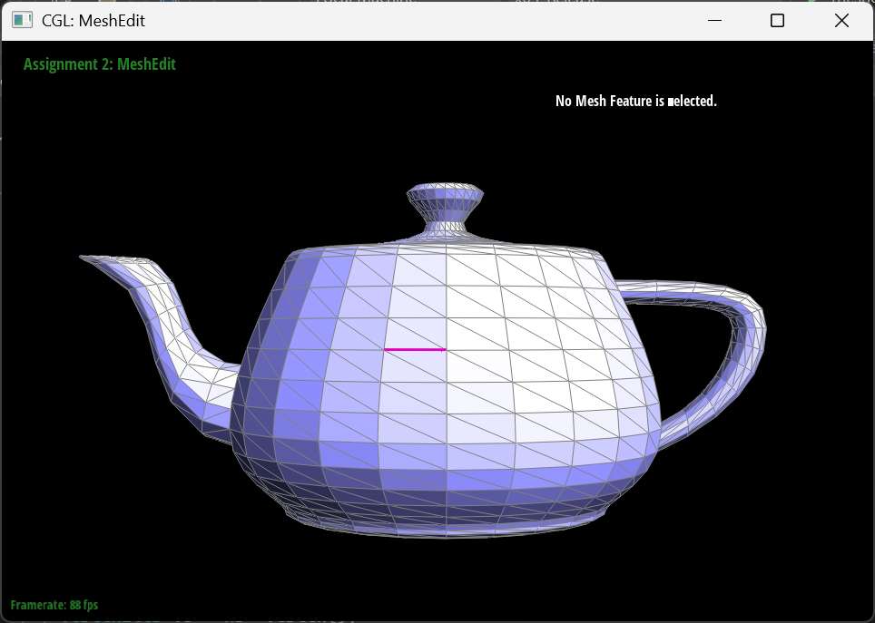
|
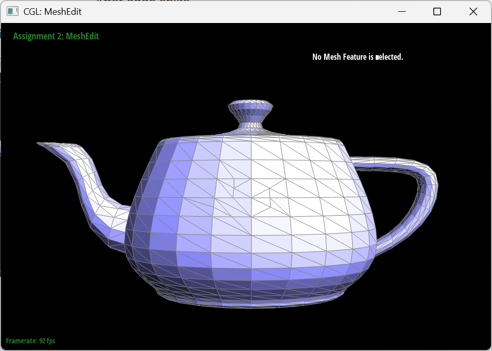
|
Teapot mesh before and after combination of both edge splits and edge flips
|
|
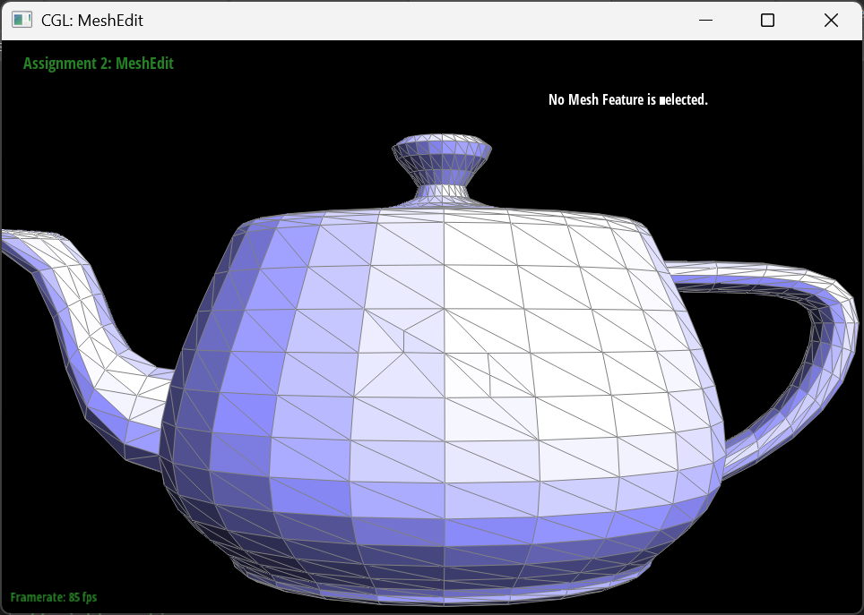
|
My debugging journey
Due to the nature of this function, which was purely creating new edges, half edges, vertices, and faces, and the corresponding values to these and the original objects, if the function failed when testing, the only option was to look through my drawing of the mesh and see what we had assigned wrong. we had to repeat this process of checking and fixing multiple times until the split worked. One of the major errors that we had done was forgetting that faces and halfedges exist outside of 2 triangles we were manipulating, causing the setNeighbors to be incorrect for the outer halfedges.
Part 6: Loop subdivision for mesh upsampling
How it was implemented
Loop subdivision was implemented following the 5 steps that were recommended. We first looped through all the vertexes to compute their new position. For each vertex, we looped through all the neighboring, vertexes to get n, u and the sum of all the neighboring positions. We then set newPosition equal to
(1 - n * u) * v->position + u * position_sum
The next step was looping through every edge and calculating the position of the vertex that will be splitting it. This was done by getting the 4 vertices of the 2 triangles connected to the edge and following the equation
(3.0 / 8) * (A_pos + B_pos) + (1.0 / 8) * (C_pos + D_pos)
The third step was done by creating a vector with all the current edges (these are the original edges) and looping through the vector. Each original edge was split and the new vector's newPosition flag was set to the newPosition flag on the edge'. The flag isNew is also set on the vector.
The fourth step was done by looping through all the meshes. The vertices connecting the edge was grabbed and if an old vertex is connecting a new vertex (found by checking the flag), the edge is flipped.
The final step was to loop through all the vertices and assign its position to its newPosition flag.
One interesting implementation/debugging trick I used was assigning the isNew flag to edges and vertices inside the split function rather than inside the upsample function. I found this to be easier since there were iterators for the halfedges already that I could use rather than trying to get them after running split edge.
Notes and observations about mesh behavior after subdivision
|
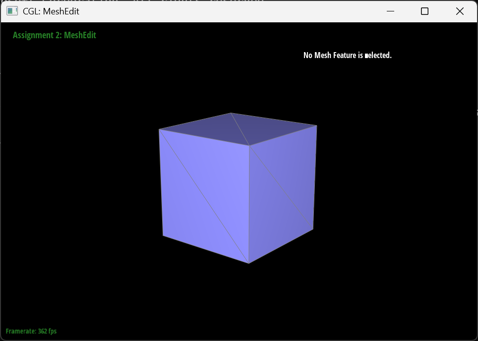
|
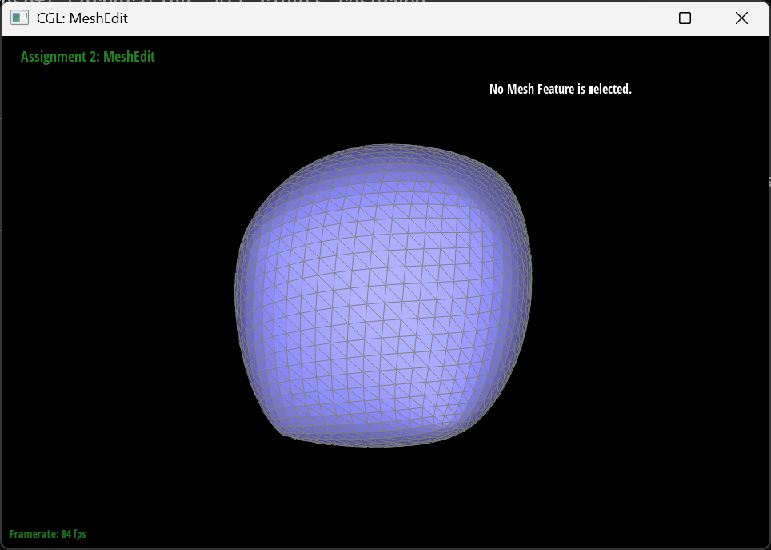
|
Sharp edges and corners tend to round off after being upsampled. This is extremely apparent in the cube, where after being upsampled multiple times, is more like a gusher. Pre splitting edges along the corner and edges is able to help maintain the sharper features during subdivision.
Experimenting with cube.dae
I was able to pre-process the cube with edge flips and splits so that the cube subdivides symmetrically. I did this by splitting the edge in the middle so there were 4 equal faces on each side of the cube. This happens because in presampling, the positions of the new vertices are calculated based on the current vertices and based on the existing edges. Since there was only one edge on each side of the cube, that edge is sampled more, creating more vertices assymetrically. Basically the upsampling propagated the non-uniformity.
|
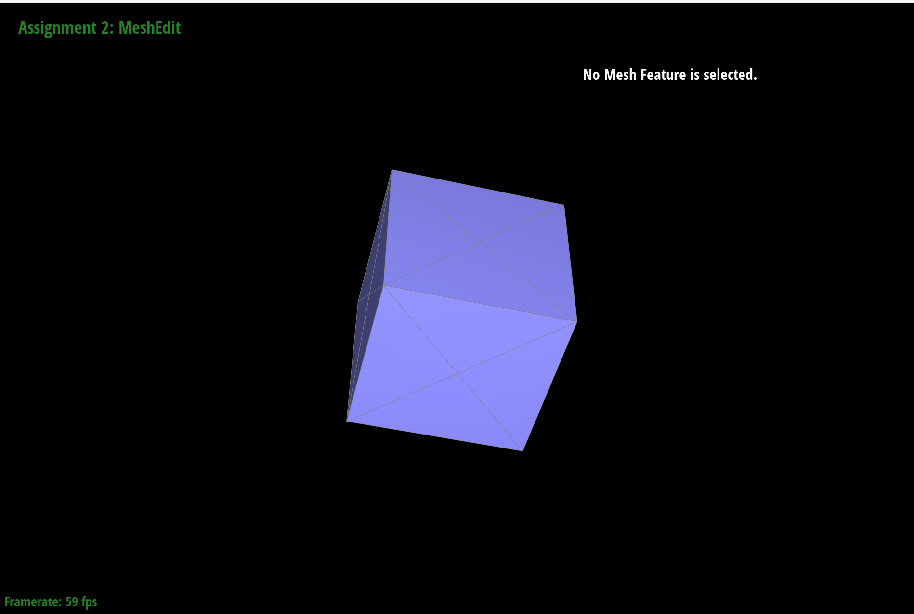
|
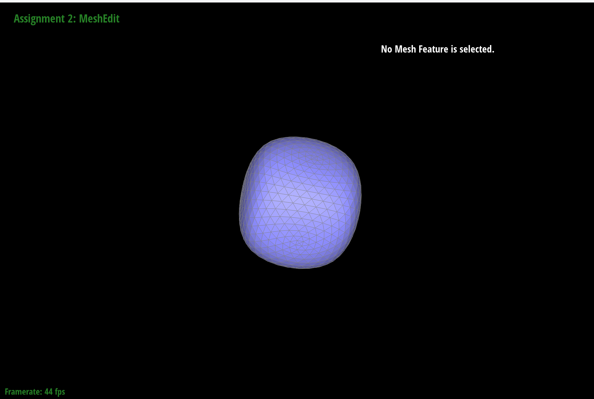
|